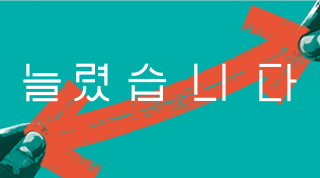
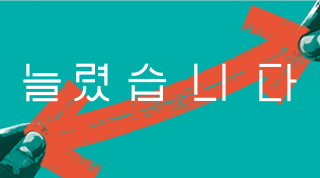
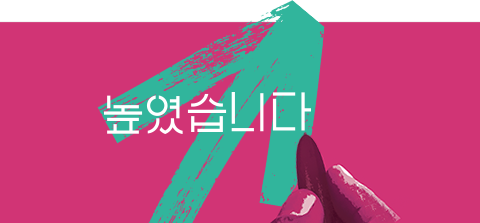
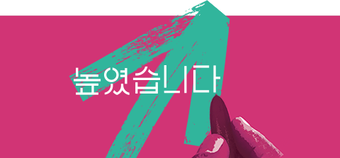

영락·추모공원 "25년 추석 명절기간 운영안내
영락․추모공원‘25년 추석 명절기간 운영안내□ 추석 명절기간(‘25.10.3.~10.9.) 영락․추모공원 정상운영 ❍ 종합상황실 운영(영락공원 ☎790-5000, 추모공원 ☎790-5100) ❍ 추석 당일(10.6.월) 화장, 매장, 개장, 봉안업무 중단 ❍ 봉안시설 참배시간 0.5~2시간 연장 운영 ☞ 08:00∼19:00 □ 명절기간 참배문화 개선 ❍ 제례실 미운영 및 제수용 음식물 반입 금지 ❍ 봉안시설 참배 시 묵념과 헌화로 간소화된 참배문화 동참 ❍ 제례 등 필요한 경우 명절기간 전·후 방문 이용 ❍ 영락, 추모공원 플라스틱 조화 사용 자제(생화, 국화 사용) □ 임시주차장 운영(영락 4,600면, 추모 700면) ❍ 영락공원 : 스포원 2,000면, 고분로 300면, 구민운동장 800면, 기타 1,500면 ❍ 추모공원 : 도로변(2km) 월평방향 400면, 정관방향 300면 ❍ 명절기간 교통 정체로 대중교통(버스, 도시철도) 이용 당부 □ 영락공원 봉안시설 장기 미연장자 허가취소 안내 ❍ 영락공원 홈페이지 또는 방문 신청(가족 중 누구나 가능) ❍ 사용료 납부ㆍ면제대상자 기한 내 연장신청(장기 미연장 시 허가취소)
2025-09-23
 


 
